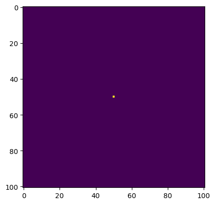
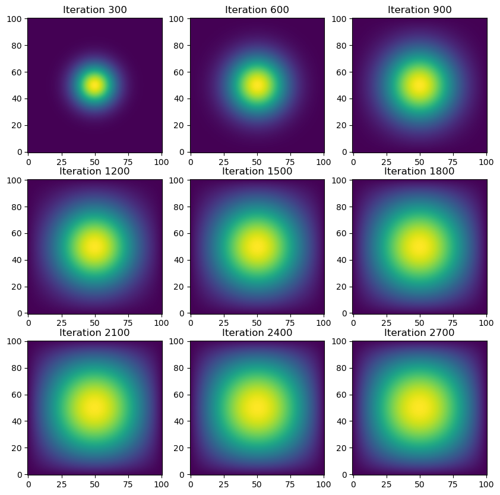

N = 101
epsilon = 0.2Welcome! In this post, I will show you how to conduct a simulation of two-dimensional heat diffusion in various ways: matrix multiplication, sparse matrix in JAX, direct operation with numpy, and with JAX.
The Math and Science Behind Two-dimensional Heat Diffusion
By definition, heat diffusion is the “process of determining the spatial distribution of temperature on a conductive surface over time by using the heat equation.” You can read more about heat diffusions here.
This is the equation for two-dimensional heat-diffusions:
\[ \frac{\partial f(x, t)}{\partial t} = \frac{\partial^2f}{\partial x^2} + \frac{\partial^2f}{\partial y^2}. \]
For the purpose of demonstration in this post, we will use the following values for N and ε (epsilon).
This will be the initial condition for our heat diffusion: putting 1 unit of heat at the midpoint.
import numpy as np
from matplotlib import pyplot as plt
# construct initial condition: 1 unit of heat at midpoint.
u0 = np.zeros((N, N))
u0[int(N/2), int(N/2)] = 1.0
plt.imshow(u0)
Using Matrix Multiplication
Let’s use matrix-vector multiplication to simulate the heat diffusion in the 2D space. The vector here is created by flattening the current solution \(u_{i, j}^k\). Each iteration of the update is given by:
def advance_time_matvecmul(A, u, epsilon):
"""Advances the simulation by one timestep, via matrix-vector multiplication
Args:
A: The 2d finite difference matrix, N^2 x N^2.
u: N x N grid state at timestep k.
epsilon: stability constant.
Returns:
N x N Grid state at timestep k+1.
"""
N = u.shape[0]
u = u + epsilon * (A @ u.flatten()).reshape((N, N))
return uIn other words, we view \(u_{i, j}^k\) as the element with index \(N \times i + j\) in a vector of length \(N^2\). We’ll put the function above in heat_equation.py.
Following the indexing used in advance_time_matvecmul(A, u, epsilon), the matrix A has size \(N^2 \times N^2\), without all-zero rows or all-zero columns. The corresponding A matrix is given by:
n = N * N
diagonals = [-4 * np.ones(n),
np.ones(n-1),
np.ones(n-1),
np.ones(n-N),
np.ones(n-N)]
diagonals[1][(N-1)::N] = 0
diagonals[2][(N-1)::N] = 0
A = (np.diag(diagonals[0]) + np.diag(diagonals[1], 1)
+ np.diag(diagonals[2], -1) + np.diag(diagonals[3], N)
+ np.diag(diagonals[4], -N))We will define a function get_A(N) that takes in the value N as the argument and returns the corresponding matrix A in heat_equation.py. This is what the equation looks like:
import inspect
from heat_equation import get_A
print(inspect.getsource(get_A))def get_A(N):
""" Returns the corresponding matrix A according to N
Returns:
N^2 x N^2 matrix without all-zero rows or all-zero columns
"""
n = N * N
diagonals = [-4 * np.ones(n),
np.ones(n-1),
np.ones(n-1),
np.ones(n-N),
np.ones(n-N)]
diagonals[1][(N-1)::N] = 0
diagonals[2][(N-1)::N] = 0
A = np.diag(diagonals[0]) + np.diag(diagonals[1], 1) + np.diag(diagonals[2], -1) + np.diag(diagonals[3], N) + np.diag(diagonals[4], -N)
return A
Let’s run the simiulation with get_A() and advance_time_matvecmul() fro 2700 iterations and see how long it takes!
advance_time_matvecmul(A, u0, epsilon)
get_A(N)array([[-4., 1., 0., ..., 0., 0., 0.],
[ 1., -4., 1., ..., 0., 0., 0.],
[ 0., 1., -4., ..., 0., 0., 0.],
...,
[ 0., 0., 0., ..., -4., 1., 0.],
[ 0., 0., 0., ..., 1., -4., 1.],
[ 0., 0., 0., ..., 0., 1., -4.]])Let’s run the code above for 2700 iterations and see how long it takes!
import numpy as np
from matplotlib import pyplot as plt
import time
# Parameters
num_iterations = 2700
interval = 300 # Interval for saving snapshots for visualization
# Initial condition: 1 unit of heat at midpoint
u = np.zeros((N, N))
u[int(N / 2), int(N / 2)] = 1.0
# Get the matrix A for finite difference
A = get_A(N)
# Array to store intermediate solutions for visualization
snapshots = []
# Run the simulation
start_time = time.time()
for i in range(num_iterations):
u = advance_time_matvecmul(A, u, epsilon)
if (i + 1) % interval == 0:
snapshots.append(u.copy())
# Measure the simulation time
simulation_time = time.time() - start_time
print(f"Simulation time (without visualization): {simulation_time:.2f} seconds")
# Visualization: 3x3 grid of heatmaps for snapshots
fig, axes = plt.subplots(3, 3, figsize=(10, 10))
for idx, ax in enumerate(axes.flatten()):
if idx < len(snapshots):
im = ax.imshow(snapshots[idx], cmap='viridis', origin='lower')
ax.set_title(f"Iteration {interval * (idx + 1)}")
ax.axis('on')Simulation time (without visualization): 85.92 secondsLooks like that took over a minute to run!
Sparse Matrix in jax
Let’s try running the same simulation using sparse matrix in JAX. To do that, we’ll define a function get_sparse_A(N) that returns A_sp_matrix, which is the same as the matrix A but in a sparse format. This is what get_sparse_A(N) looks like:
from heat_equation import get_sparse_A
print(inspect.getsource(get_sparse_A))def get_sparse_A(N):
"""Constructs the finite difference matrix for 2D heat diffusion in sparse format."""
return sparse.BCOO.fromdense(jnp.array(get_A(N)))
from heat_equation import get_sparse_A
import jax.numpy as jnp
from jax.experimental import sparse
import timeit
# Parameters
num_iterations = 2700
interval = 300 # Interval for saving snapshots for visualization
# Initial condition: 1 unit of heat at midpoint
u = np.zeros((N, N))
u[int(N / 2), int(N / 2)] = 1.0
# Get the matrix A for finite difference
A = get_sparse_A(N)
# Array to store intermediate solutions for visualization
snapshots = []
# Run the simulation
start_time = time.time()
for i in range(num_iterations):
u = advance_time_matvecmul(A, u, epsilon)
if (i + 1) % interval == 0:
snapshots.append(u.copy())
# Measure the simulation time
simulation_time = time.time() - start_time
print(f"Simulation time (without visualization): {simulation_time:.2f} seconds")
# Visualization: 3x3 grid of heatmaps for snapshots
fig, axes = plt.subplots(3, 3, figsize=(10, 10))
for idx, ax in enumerate(axes.flatten()):
if idx < len(snapshots):
im = ax.imshow(snapshots[idx], cmap='viridis', origin='lower')
ax.set_title(f"Iteration {interval * (idx + 1)}")
ax.axis('on')Simulation time (without visualization): 7.82 secondsIt only took 13 seconds to run when using sparse matrix in JAX! That’s an impressive improvement! But can we do better?
Direction Operation with numpy
Let’s simplify the matrix multiplications done in advance_time_matvecmul(A, u, epsilon) by using np.roll() in Numpy. To do this, we’ll write a function advance_time_numpy(u, epsilon) that advances the solution by one timestep in the file heat_equation.py. This is what advance_time_numpy(u, epsilon) looks like:
import inspect
from heat_equation import advance_time_numpy
print(inspect.getsource(advance_time_numpy))def advance_time_numpy(u, epsilon):
"""Advances the heat diffusion solution by one timestep using numpy operations."""
# Create a padded version of u with zeros around the border
u_pad = np.pad(u, pad_width=1, mode='constant', constant_values=0)
# Calculate the updated values by rolling the array
u_new = (1 - 4 * epsilon) * u_pad[1:-1, 1:-1] + \
epsilon * (np.roll(u_pad, shift=1, axis=0)[1:-1, 1:-1] +
np.roll(u_pad, shift=-1, axis=0)[1:-1, 1:-1] +
np.roll(u_pad, shift=1, axis=1)[1:-1, 1:-1] +
np.roll(u_pad, shift=-1, axis=1)[1:-1, 1:-1])
return u_new
from heat_equation import get_sparse_A
import jax.numpy as jnp
from jax.experimental import sparse
import timeit
# Parameters
num_iterations = 2700
interval = 300 # Interval for saving snapshots for visualization
# Initial condition: 1 unit of heat at midpoint
u = np.zeros((N, N))
u[int(N / 2), int(N / 2)] = 1.0
# Get the matrix A for finite difference
A = get_sparse_A(N)
# Array to store intermediate solutions for visualization
snapshots = []
# Run the simulation
start_time = time.time()
for i in range(num_iterations):
u = advance_time_numpy(u, epsilon)
if (i + 1) % interval == 0:
snapshots.append(u.copy())
# Measure the simulation time
simulation_time = time.time() - start_time
print(f"Simulation time (without visualization): {simulation_time:.2f} seconds")
# Visualization: 3x3 grid of heatmaps for snapshots
fig, axes = plt.subplots(3, 3, figsize=(10, 10))
for idx, ax in enumerate(axes.flatten()):
if idx < len(snapshots):
im = ax.imshow(snapshots[idx], cmap='viridis', origin='lower')
ax.set_title(f"Iteration {interval * (idx + 1)}")
ax.axis('on')Simulation time (without visualization): 0.47 seconds
Amazing! That only took half a second to run. Let’s see if we can do even better with JAX!
With jax
Let’s use jax to define a function advance_time_jax(u, epsilon) that does similar just-in-time compilation done in advance_time_numpy(u, epsilon). Here’s what advance_time_jax(u, epsilon) looks like:
import inspect
from heat_equation import advance_time_jax
print(inspect.getsource(advance_time_jax))@jax.jit
def advance_time_jax(u, epsilon):
"""Advances the heat diffusion solution by one timestep using JAX operations."""
u_pad = jnp.pad(u, pad_width=1, mode='constant', constant_values=0)
u_new = (1 - 4 * epsilon) * u_pad[1:-1, 1:-1] + \
epsilon * (jnp.roll(u_pad, shift=1, axis=0)[1:-1, 1:-1] +
jnp.roll(u_pad, shift=-1, axis=0)[1:-1, 1:-1] +
jnp.roll(u_pad, shift=1, axis=1)[1:-1, 1:-1] +
jnp.roll(u_pad, shift=-1, axis=1)[1:-1, 1:-1])
return u_new
from heat_equation import get_sparse_A
import jax.numpy as jnp
from jax.experimental import sparse
import timeit
# Parameters
num_iterations = 2700
interval = 300 # Interval for saving snapshots for visualization
# Initial condition: 1 unit of heat at midpoint
u = np.zeros((N, N))
u[int(N / 2), int(N / 2)] = 1.0
# Get the matrix A for finite difference
A = get_sparse_A(N)
# Array to store intermediate solutions for visualization
snapshots = []
# Run the simulation
start_time = time.time()
for i in range(num_iterations):
u = advance_time_jax(u, epsilon)
if (i + 1) % interval == 0:
snapshots.append(u.copy())
# Measure the simulation time
simulation_time = time.time() - start_time
print(f"Simulation time (without visualization): {simulation_time:.2f} seconds")
# Visualization: 3x3 grid of heatmaps for snapshots
fig, axes = plt.subplots(3, 3, figsize=(10, 10))
for idx, ax in enumerate(axes.flatten()):
if idx < len(snapshots):
im = ax.imshow(snapshots[idx], cmap='viridis', origin='lower')
ax.set_title(f"Iteration {interval * (idx + 1)}")
ax.axis('on')Simulation time (without visualization): 0.20 seconds
Less than half a second! That’s even better than using direction operation with Numpy!
Comparison
In conclusion, it’s much faster to use JAX to perform the heat diffusion simulation than using traditional NumPy operations or matrix-vector multiplication. By leveraging JAX’s just-in-time (JIT) compilation and automatic differentiation capabilities, we can optimize the performance significantly, especially for large-scale computations that require iterative updates.